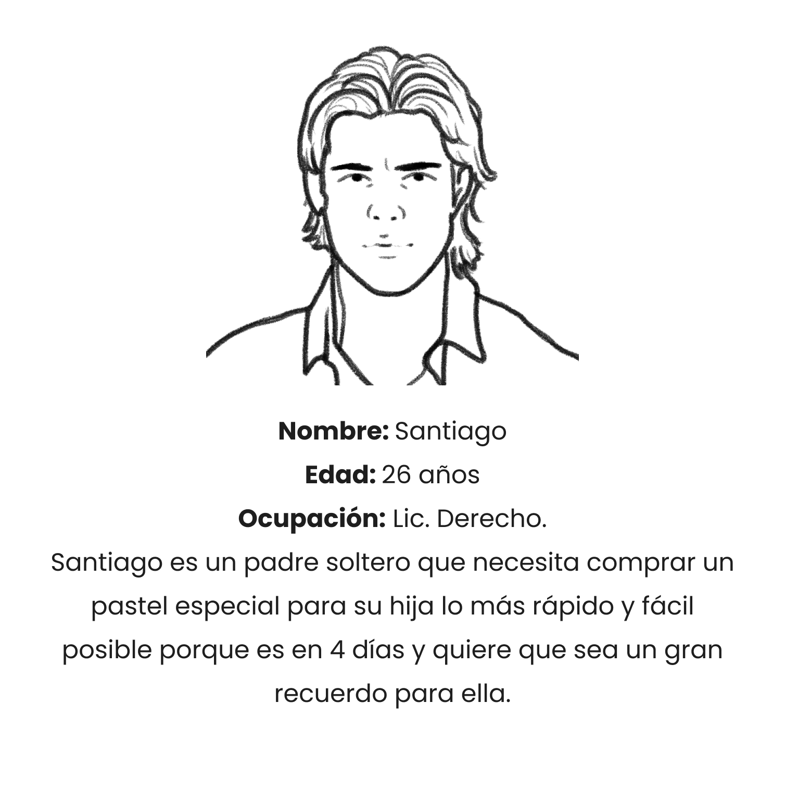

Personas


4 Meses (Septiembre - Diciembre 2022).
Personas que organizan fiestas suelen tener poco tiempo para dedicar a la compra de un pastel y encontrar uno con las características específicas que ellos quieren.
En esta etapa realicé mapas de recorrido de usuario y entrevistas que clarificaran los usuarios finales para los cuáles estoy diseñando y sus necesidades. El primer grupo de usuarios identificados fueron amas de casas que en momentos de organización de festividades se encuentran saturadas de actividades por hacer.
La investigación también reveló que adultos de edades entre los 20 y 50 años también se encuentran ante el mismo dilema del tiempo cuando organizan fiestas. La selección de ingredientes también supone una dificultad, ya que preferirían tener más control sobre su selección.
Las personas que organizan fiestas tienen el tiempo justo para designar a otras actividades.
Las plataformas en línea no permiten hacer una selección personalizada para sus órdenes.
Los ingredientes son difíciles de visualizar porque no ofrecen un apoyo gráfico para conocerlos.
Se utilizan íconos que permiten una navegación más sencilla.
Se utilizan recursos gráficos para apoyar la elección de ingredientes para pedidos u otros productos del catálogo.
Se ofrece cambio de idioma y moneda para personas de otras nacionalidades que se encuentren dentro de la zona de ventas.